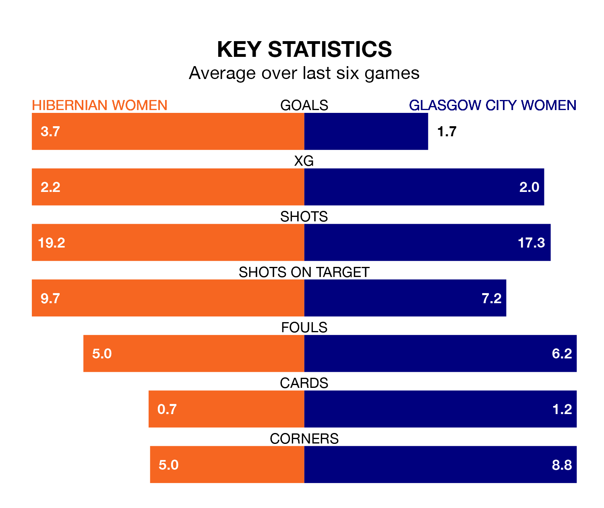

Hibernian Women face a challenge to maintain their high-scoring form at home against a tight Glasgow City Women defence on Sunday.
With 37 goals in 14 games, Hibernian are the joint-third-highest scorers in SWPL 1 ahead of the 4.010pm kick-off at the Meadowbank Stadium.
They face a Glasgow City side who have scored 35 in 14 matches, but conceded only nine goals, putting them third among the league's tightest defences – only Rangers Women and Celtic Women have conceded fewer goals.
With Katie Fraine between the sticks, Hibernian can rely on one of the league's safest pair of hands. She has kept five clean sheets in her 12 appearances this season, and only one other 'keeper – Celtic Women's Kelsey Daugherty – has been able to prevent the opposition scoring on more occasions in SWPL 1.
In Glasgow City's net, Lee Alexander has four clean sheets in eight games.
The visitors are third in the table after 14 games, of which they have won 10 and drawn two, earning 32 points.
Hibs are two places behind Glasgow City in fifth, with eight wins and two draws putting them on 26 points.
The home team are in reasonable form in SWPL 1, with four wins and two losses from their last six games.
With four wins and a draw over that period, Glasgow City's form is slightly better – they have taken 13 points from 18, compared to Hibernian's 12.
Over the last two years, Hibernian and Glasgow City have played each other on eight occasions. Hibernian won one of them, Glasgow City six, and they drew once.
On average, Hibs scored 0.6 goals and Glasgow City 2.0 in those matches.
Their last meeting was on August 13, when Glasgow City won 3-0 at home.
Hibernian's last match was on November 26, a 4-1 win against Spartans Women, with Abbie Ferguson, Ellis Notely, Jorian Baucom and Leah Eddie getting the goals for Hibs.
Glasgow City beat Dundee United Women 3-1 last time out, also on November 26, with Hayley Lauder (two) and Lauren Davidson on the scoresheet.
